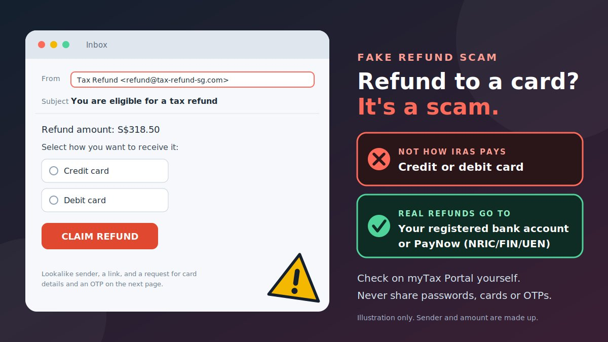

An email says you are eligible for a tax refund of S$318.50. All you have to do is pick how you want to receive it, and the options listed are a credit card or a debit card. It feels like a small win. It is also the point where the scam works, because a genuine refund is never paid that way.
How fake PayNow refund scams work
"Refund" is a word that lowers your guard. Most versions follow the same pattern.
- The bait. An email, SMS, or chat message says you are due a tax refund, or that a refund is "pending" or "failed."
- The link. It leads to a website made to look like a government or bank page.
- The ask. The page asks you to choose a refund method, often a credit or debit card, then to enter card details and a one-time password (OTP).
- The loss. According to the Singapore Police Force, victims often discover the scam only when they are later notified of unauthorised transactions on their cards.
The common versions
| Version | The story | What the scammer wants |
|---|---|---|
| Fake IRAS refund email | "You are eligible for a tax refund. Select a refund method." | Card details and an OTP |
| Fake refund SMS | "Your PayNow refund failed. Update your details" plus a link | Banking login or card details |
| "Wrong transfer" refund | Someone says they paid you by mistake and asks you to send it back | Your money, or your account as a way to move theirs |
| Phone call | A caller posing as an IRAS officer asks you to "confirm" payment or card details | Card or bank details over the phone |
How legitimate IRAS refunds actually work
Knowing the real process makes the fake one easy to spot. IRAS says any tax refunds are automatically credited to the bank account registered with IRAS, or to a PayNow account linked to your NRIC, FIN or UEN. IRAS does not process tax refunds to credit or debit cards. You can check updates on any refund in the IRAS myTax Portal.
| Genuine IRAS refund | Scam refund | |
|---|---|---|
| Where the money goes | Your registered bank account, or PayNow linked to NRIC, FIN or UEN | A credit or debit card you are told to enter |
| What you need to do | Nothing. It is credited automatically. You can check on myTax Portal. | Click a link, choose a method, enter details and an OTP |
| Email address | Ends with @iras.gov.sg | A lookalike or unrelated address |
| What IRAS sends by email | IRAS does not email refund amounts or confidential tax documents. Those sit on myTax Portal. | An email with an amount and a "claim" button |
The same logic applies to PayNow in general. To receive a PayNow transfer, you do not approve anything or share an OTP. The sender makes the payment to your registered mobile number, NRIC, FIN, or UEN. If someone says you must enter a PIN, scan a code, or share an OTP to "receive" money, it is not a real refund.
Warning signs of a fake refund message
- It asks you to choose a card or to enter card details to get a refund.
- It contains a link, and the page asks for your banking username, password, or an OTP.
- The email does not come from an address ending in @iras.gov.sg. Check the address, even if the sender name shows "IRAS."
- An SMS claiming to be from the government does not use the gov.sg sender ID.
- It states your refund amount by email, which IRAS says it does not do.
- An SMS from a "bank" has a clickable link. The ScamShield website says banks will never send clickable links by SMS.
- It sets a deadline or says the refund will be cancelled.
- A caller wants card or bank details over the phone, or asks you to move money to a "safe" account.
- The sender asks you to hand over your account to receive or pass on money for them.
Realistic scam message examples
These are composite examples written to show the pattern. They are not reports about real people, and the amounts and web addresses are made up.
How to verify a refund message through official channels
You can check any refund claim without touching the link in the message.
- Do not click, reply, or call the details in the message.
- Check the sender. A real IRAS email address ends with
@iras.gov.sg. A real government SMS uses thegov.sgsender ID. A sender name alone proves nothing. - Log in to the myTax Portal yourself. Type
mytax.iras.gov.sginto your browser, sign in as you normally do, and check for refund updates. All tax notices and transactions are deposited there. - Read IRAS's own page on refunds at iras.gov.sg/quick-links/refunds to see how refunds are paid.
- Check IRAS's scam advisories, including the page on tax refund scams, to see whether your message matches a known scam.
- Ask ScamShield. Use the ScamShield app, the ScamShield WhatsApp bot, or call the ScamShield Helpline on 1799 if you are unsure.
- Never give out your internet banking username, password, OTP, or card details through a link or a call.
How to check a suspicious link
The safest check is not to tap it. If you want to understand a link, use these steps without opening it.
- Find the domain. It is the part right after
https://and before the first single/. Inhttps://iras.gov.sg.refund-sg.com/claim, the real site isrefund-sg.com, not IRAS. - Read the ending first. Genuine Singapore government websites use addresses ending in
gov.sg. Words placed before a different ending do not turn that site into a government site. - Watch for tricks: extra words ("refund," "tax," "paynow"), hyphens, swapped letters, or a different ending.
- Do not trust the padlock. https only means the connection is encrypted. Fake pages can have it too.
- Be wary of shortened links such as bit.ly, which hide the destination.
- Remember the bigger rule. A refund message should not need you to click a link to give card details at all.
Try the link red-flag scanner
Paste a link you received. The tool reads the address only. It does not open the link, and nothing you paste leaves your browser.
Prevention tips
- Add the ScamShield app to your phone to filter scam SMSes and block scam calls.
- Check, then act. Before you tap or reply, check scam signs with official sources.
- Keep your banking details private. Do not share passwords, banking credentials, or card details with anyone over the phone or online.
- Turn on transaction alerts and read them. Early notice of an odd transaction gives you time to act.
- Go to the portal yourself. For tax matters, use myTax Portal. For your bank, open its official app or type its address.
- Remember what government officials will not do. They will not ask you to transfer money or share bank login details over a phone call.
- Say no to account-lending requests. Do not let anyone use your bank account to receive or transfer money for them, even for a fee.
- Tell your family, especially older relatives, that IRAS does not refund to cards.
What to do if you have been scammed
Act fast. Quick action gives the best chance of stopping money from leaving your account.
- Call your bank immediately. Report the fraudulent transactions and ask the bank to block them and to secure your accounts and cards. Use the number on your card or in the bank's official app.
- Make a police report. You can call the Police Hotline on 1800-255-0000 or submit information online through the Police iWitness portal. If you need urgent police help, dial 999.
- Change your internet banking credentials and any passwords that were the same or similar.
- If you installed software or an app, turn off the device, remove the software, and run a full antivirus scan.
- Keep evidence: the message, sender address or number, the link, screenshots, and your transaction records.
- Report the scam to the platform it came through, and use the ScamShield app to report scam calls and messages.
- Get advice from the ScamShield Helpline on 1799 or the Anti-Scam Helpline on 1800-722-6688.
Police work with banks through the Anti-Scam Centre to trace funds and freeze accounts suspected of being used by scammers. Recovery is not guaranteed, and the police say it is generally very difficult for money that has been transferred outside Singapore, so reporting quickly matters.
If you are asked to move money or lend your account to someone, or if you find unknown money in your account, report it to the police and your bank right away.
Conclusion
The fake PayNow refund scam works because it offers money, not trouble. You do not need to judge every detail. IRAS does not pay refunds to credit or debit cards. Real refunds go to your registered bank account or to PayNow linked to your NRIC, FIN or UEN, and you can check on myTax Portal yourself. If a message asks for card details, a banking password, or an OTP through a link, close it, report it, and go to the official site.
Related scams use the same pressure. Read our guides on the fake QR code verification scam, the fake digital identity verification link scam, and the fake AI customer support chat scam. Our fake UPI refund scam guide covers the Indian payment system, so use the Singapore contacts above if you are in Singapore.
Got a message you are unsure about? Paste it into our free checker for a quick first read.
Frequently asked questions
Does IRAS refund tax to credit or debit cards?
No. IRAS does not process tax refunds to credit or debit cards. Any message asking you to pick a card as your refund method, or to enter card details to receive a refund, is a scam.
How does IRAS actually pay tax refunds?
Refunds are automatically credited to the bank account registered with IRAS, or to a PayNow account linked to your NRIC, FIN or UEN. You can check updates on any refund in the IRAS myTax Portal at mytax.iras.gov.sg.
How can I tell if an IRAS email or SMS is real?
A genuine IRAS email address ends with @iras.gov.sg, and government SMSes use the gov.sg sender ID. IRAS does not email you your refund amount or confidential tax documents, and banks do not send clickable links by SMS. Always check the address, not just the sender name.
What should I do if I shared my card details or OTP?
Call your bank immediately to report and block any fraudulent transactions, then make a police report. Change your internet banking credentials, and if you installed anything, remove it and run a security scan.
Where can I check if something is a scam in Singapore?
You can use the ScamShield app, the ScamShield WhatsApp bot, or call the ScamShield Helpline on 1799. The Anti-Scam Helpline is 1800-722-6688, and you can give information to the police through the Police Hotline at 1800-255-0000 or the iWitness portal.
Got a refund message you want checked?
Run it through the checker